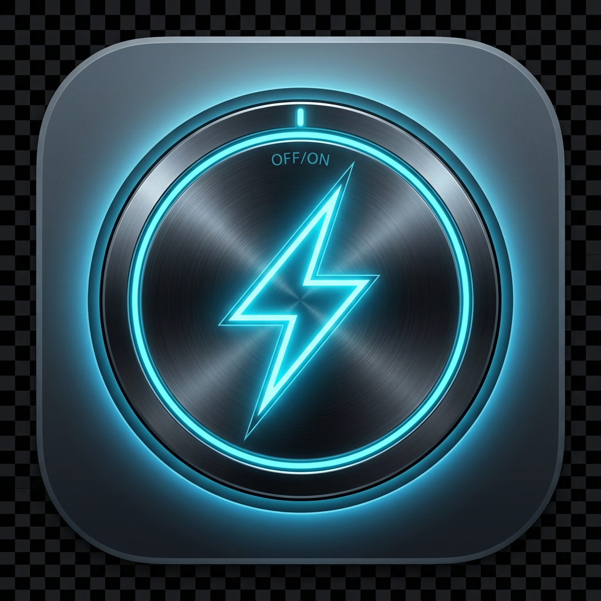

Keep your Mac awake while AI agents, builds, downloads, and long-running development tasks continue running.
curl -fsSL https://raw.githubusercontent.com/princev89/stay-awake/main/install.sh | bash
Copy and paste this command in your macOS Terminal. Works with Homebrew or standalone manual install.
Uses Apple's native IOPMAssertionCreateWithName APIs under the hood. Displays can sleep safely while the system stays locked awake.
If native power registration fails or is sandboxed, it automatically falls back to standard background caffeinate commands.
A native status bar menu item lets you toggle awake status, restore the UI, or quit the utility directly from the macOS menu bar.
Automatically remembers your preferences including launch-at-login state, minimized startup, and previous toggle state.
If you prefer using Homebrew Cask directly, you can install with:
brew install --cask princev89/tap/stay-awakeTo upgrade the application in the future:
brew upgrade stay-awake